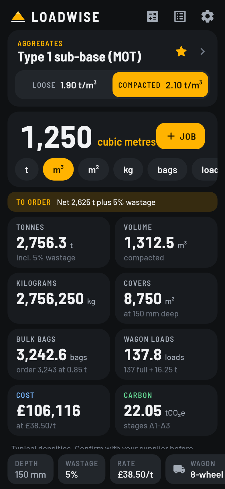
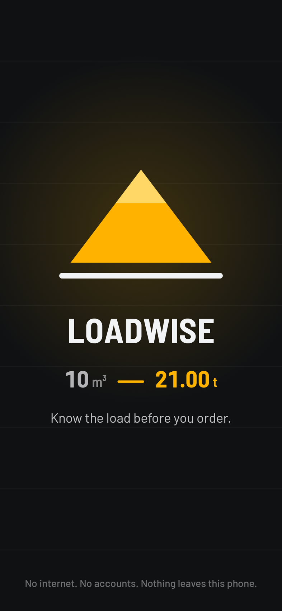
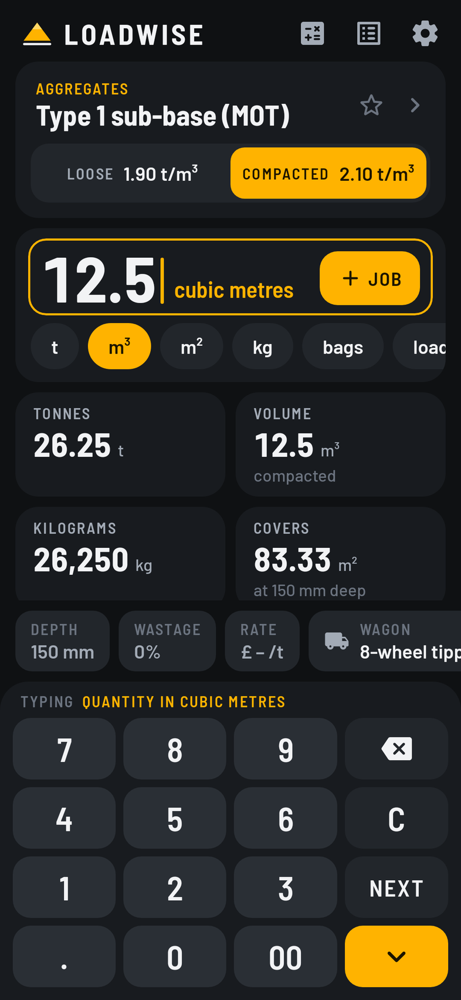
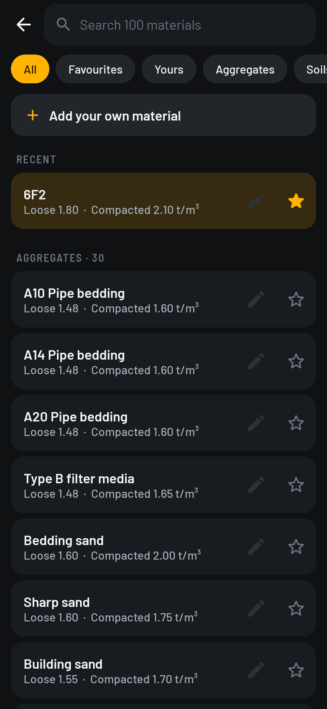
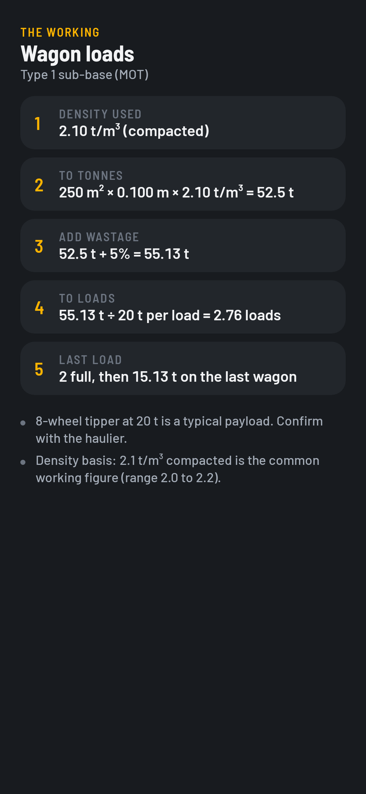
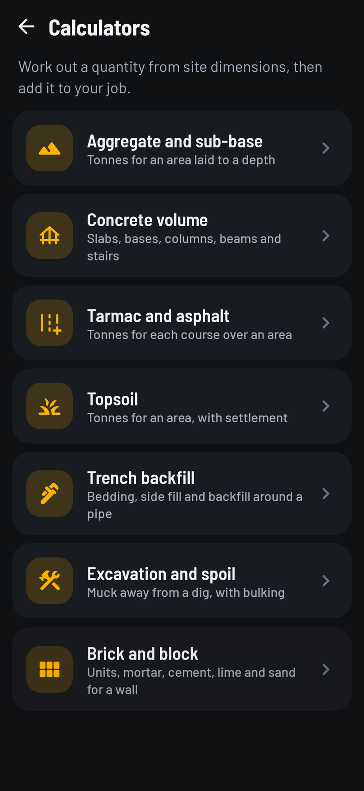
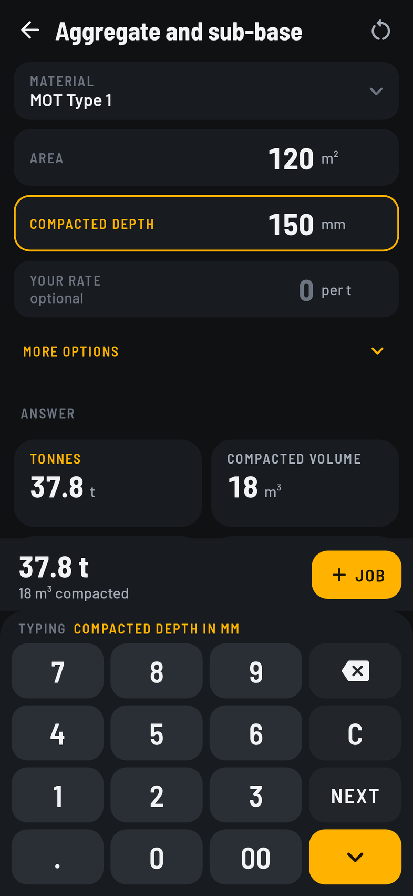
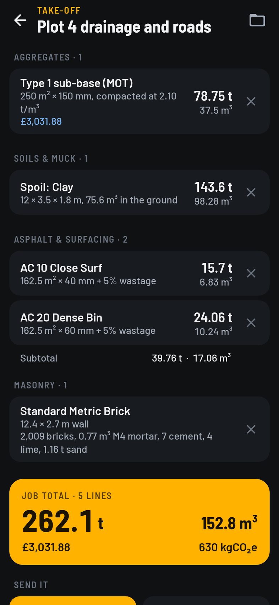
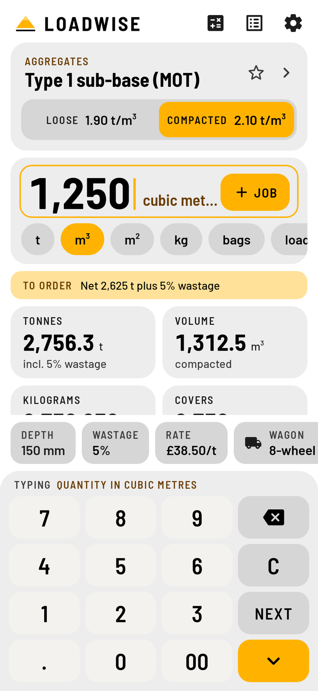

Know the load before you order.
Loadwise converts site materials between tonnes, cubic metres, coverage, bulk bags and wagon loads. Type one figure and the rest appear, for 100 materials from Type 1 to topsoil, concrete and asphalt.
Seven calculators work quantities out from site dimensions, and a take-off adds them up into a PDF. It is free, with no adverts, and it cannot go online.
Download for AndroidHow to install
- Version 1.0.0
- Android 8 or later
- 1.8 MB
Free, with nothing to unlock. No adverts, no account, no tracking. Read the release notes.
Chrome may say the file might be harmful. It shows this for app files that do not come from Google Play. Choose Download anyway.

- No subscriptionEvery feature is in the free app.
- No advertsNone in the app and none on this site.
- No internetThe app has no permission to go online.
- No accountYour jobs stay on your phone.
A look inside
These are the real screens, drawn from the app's own code with made-up jobs. Swipe or scroll sideways to see them all.








How it works
Orders go wrong when cubes are mistaken for tonnes, or loose for compacted. Loadwise keeps both in front of you.
Pick the material
Search 100 materials or add your own. Choose loose or compacted, and the density used is always on show.
Type what you know
Tonnes, cubic metres, an area at a depth, bags or loads. Every other unit appears as you type.
Add it to the job
One tap adds the line to your take-off, ready to send as a PDF or a spreadsheet.
Everything is in, and all of it is free
Nothing below is held back for a paid tier, because there is no paid tier.
Converting
- Every unit at once
- Type tonnes, cubic metres, square metres at a depth, kilograms, bulk bags or wagon loads, and see all the others straight away.
- 100 site materials
- Aggregates and sub-bases, soils and muck, concrete, asphalt and surfacing, each with a loose and a compacted density.
- Show the working
- Tap any result and Loadwise sets out the sum with your own numbers in it.
- Wagons and wastage
- Seven wagon types with full and part loads, mixers counted by volume, and a wastage allowance that shows the net and the order figure.
Calculators
- Aggregate and sub-base
- Area and compacted depth to tonnes, loose volume, wagon loads and bulk bags.
- Concrete volume
- Slabs, bases, columns, beams, ring beams, pile caps and stairs, with waste and truck loads.
- Tarmac and asphalt
- Up to six areas and four courses, with 21 UK mixes and typical depths.
- Topsoil, trenches and spoil
- Topsoil with settlement, trench bedding and backfill around a pipe, and muck away with bulking.
- Brick and block
- Units, mortar, cement, lime and sand for a wall, less its openings.
Jobs
- A take-off that adds up
- Add lines from the converter or any calculator. Each job keeps subtotals by material type and a total.
- PDF and spreadsheet
- Send the take-off as a PDF headed with your company name and logo, or as a spreadsheet file.
- Your own figures
- Add your own materials, change the density of a standard one, and set your own rate per tonne. Edited figures are marked.
On site
- Big keys
- Loadwise has its own number pad, so the keys are large and the results stay in view.
- Sunlight theme
- Black on white with no pale greys, alongside light and dark.
- Phones and tablets
- On a tablet the entry sits on the left and every result on the right.
Privacy
- No internet at all
- Loadwise has no permission to go online, so it cannot send anything anywhere.
- No account
- Nothing to sign up for. Jobs, materials and rates stay on the phone.
- A backup you hold
- One file with everything in it, saved and restored by you.
Your jobs are your business
No internet at all
Loadwise has no permission to go online. It cannot send your figures anywhere.
Nothing to sign up for
No account, no adverts and no tracking, in the app or on this site.
You hold the files
A PDF, spreadsheet or backup goes only where you send or save it.
Installing and updating
Loadwise is not on Google Play, so your phone asks a couple of extra questions the first time.
Download the app file
Tap Download on your phone. The file is called Loadwise.apk and is about 1.8 MB. If Chrome says the file might be harmful, choose Download anyway.
Allow the install
Open the file. The first time, Android asks you to allow installs from your browser. Allow it, go back, and tap Install.
Open Loadwise
There is nothing to set up. Pick a material and type a quantity.
To update, download the newest version and install it over the old one. Your jobs, materials and settings are kept.
Questions
Is Loadwise really free?
Yes. There is no paid version, no subscription, no trial and no adverts, and nothing in the app is locked.
Is Loadwise on Google Play?
No. Loadwise is a personal project and is downloaded from this site as an Android app file. It needs Android 8 or later.
Does it need the internet?
No. The app does not ask Android for internet access at all, so it works with no signal and cannot go online. Check for updates and More apps only open a page in your browser.
Where do the densities come from?
They are typical UK working figures in tonnes per cubic metre, drawn from supplier data and published weight and volume tables. Real densities change with moisture, grading and compaction, so confirm quantities with your supplier before you order.
Can I use my own densities?
Yes. Add your own material, or edit the loose and compacted figures of any standard one. Edited figures are marked and can be put back.
Does it store prices?
No. Cost appears only when you type your own rate per tonne, and Loadwise remembers that rate for the material.
What is the carbon figure?
Embodied carbon in kgCO₂e from the ICE database and the UK Government conversion factors for landfill. Most cover stages A1 to A3. You can switch it off in Settings.
How do I update Loadwise?
Download the newest version from this site and install it over the one you have. Your jobs and settings are kept. The app cannot check for updates itself because it cannot go online.